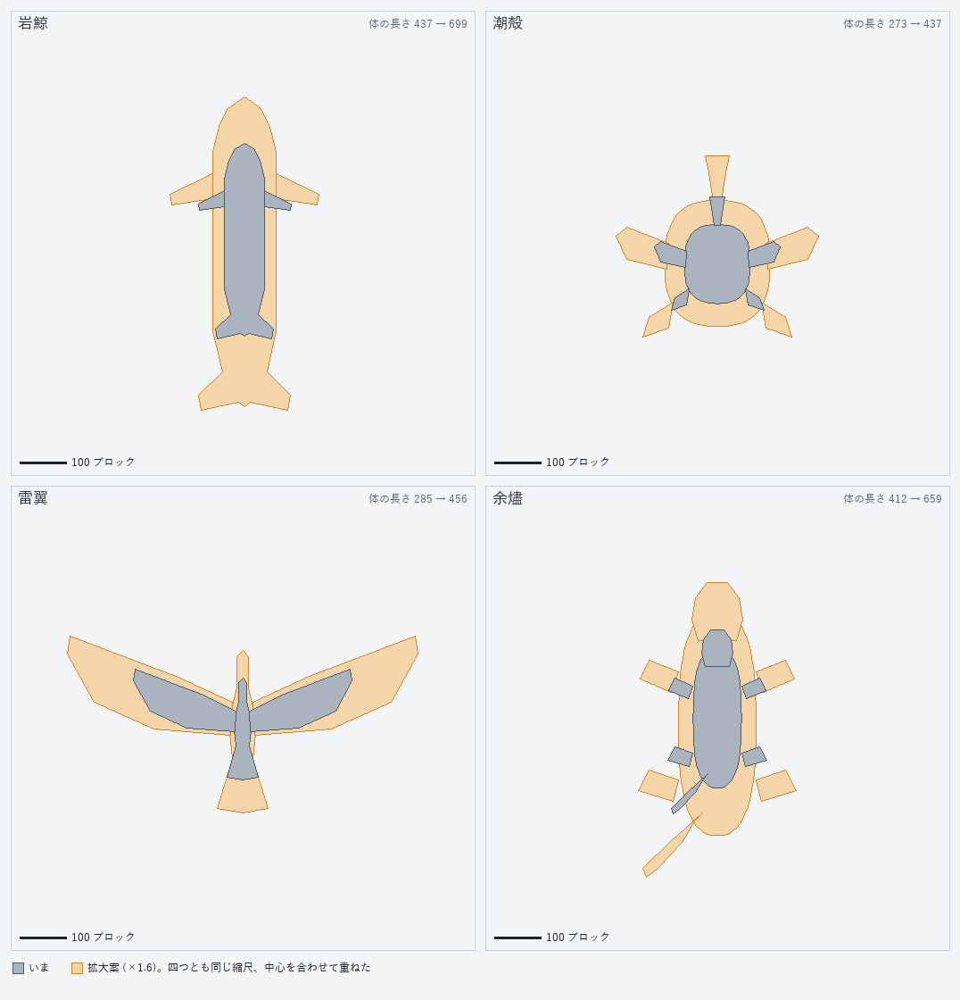
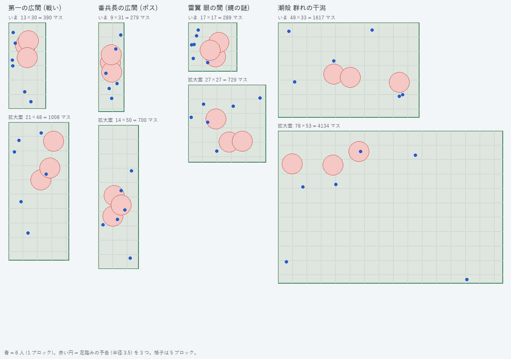
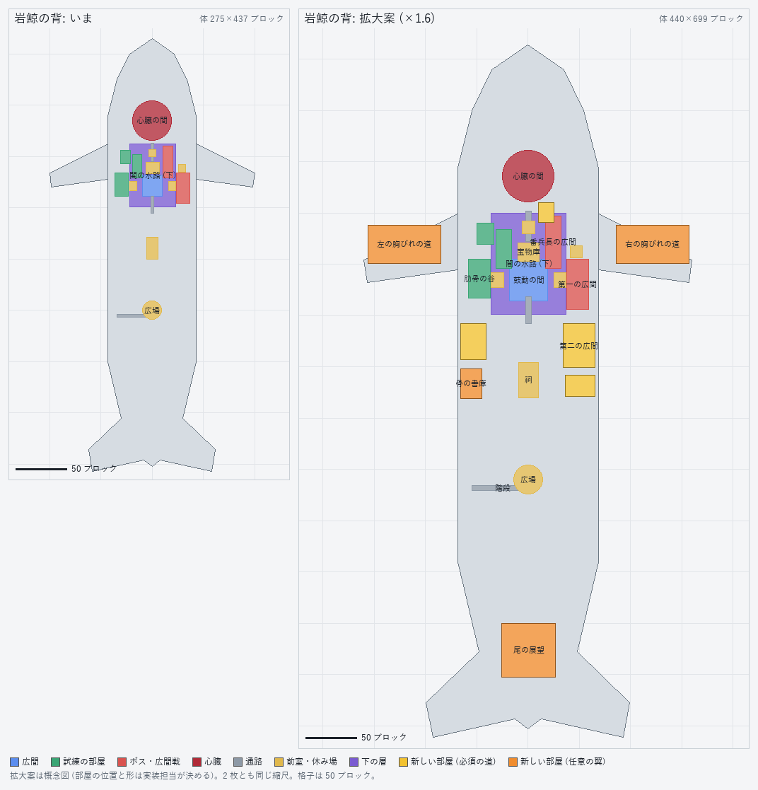
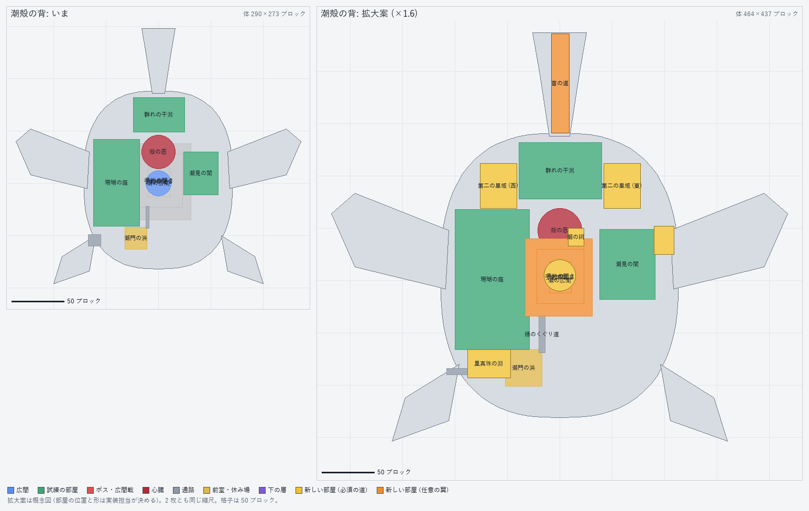
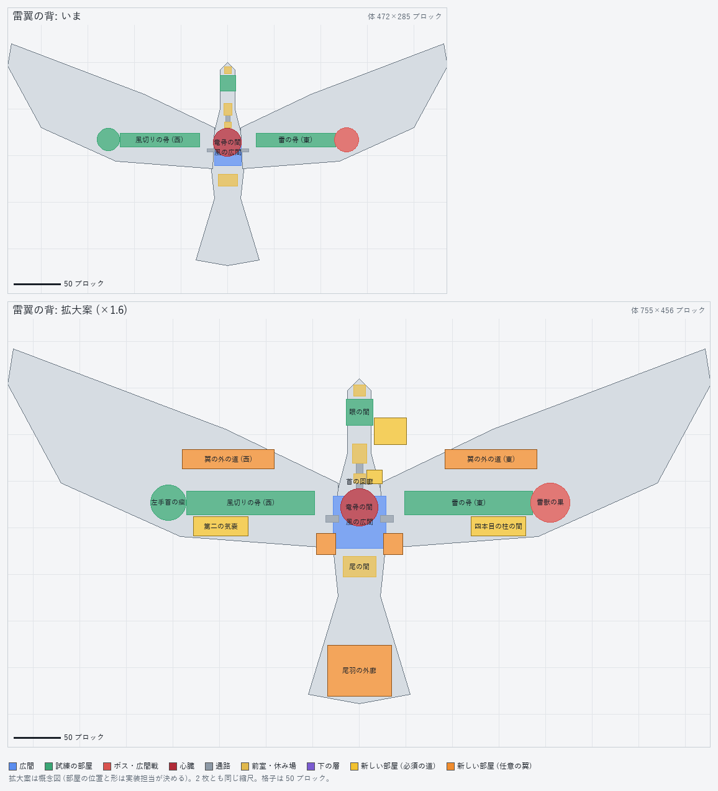
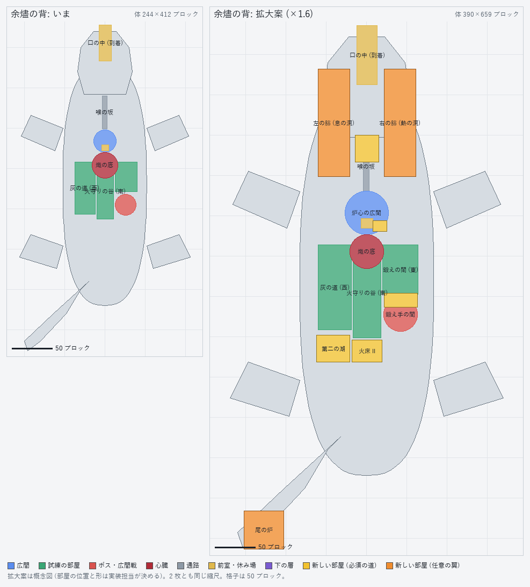

試遊の声: 「巨神の試練は、マルチプレイを想定した大きさではない。それぞれ小さすぎる。もっと巨神の体自体を大きくして、もっともっと内容濃く、広くしてもよい。」 測り方・巨神ごとの案・作り方・作業の順は docs/design/26_backs_scale_up.md。この画面は大きさの見取り図と、決めてもらう 6 つです。まだ作りません。
| 岩鯨 | 潮殻 | 雷翼 | 余燼 | |
|---|---|---|---|---|
| 体（水平 x × z） | 275×437 → 440×699 | 290×273 → 464×437 | 472×285 → 755×456 | 244×412 → 390×659 |
| 部屋の床の合計 (m²) | 3,900 → 約 21,700 | 8,600 → 約 37,200 | 6,000 → 約 29,200 | 7,000 → 約 35,300 |
| いちばん広い戦いの部屋 | 390 → 1,029 | 庭 3,652 → 9,514 | 骨の回廊 1,275 → 3,425 | 灰の道 1,625 → 4,305 |
| 心臓の間 (m²) | 1,134 → 1,963 | 804 → 1,385 | 707 → 1,257 | 804 → 1,385 |
| 通路の幅 × 高さ | 3×4 → 5〜6 × 6 以上（本道は 7） | |||
拡大案は水平 ×1.6（足あとの面積 ×2.6）。今の部屋を位置ごと拡大して面積 ×2.6、広間は ×3.6、心臓の間だけ ×1.3 にとどめる（戦いの手ごたえを保つため）。そこに 21 の初回の拡張と任意の翼を新しい空きへ置く。図は上が北（頭）。配置は概念図。






選ぶと自動で保存されます（db の choices、id は scale_1〜scale_6）。メモは任意です。